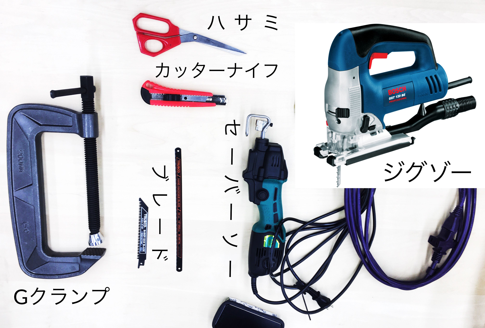
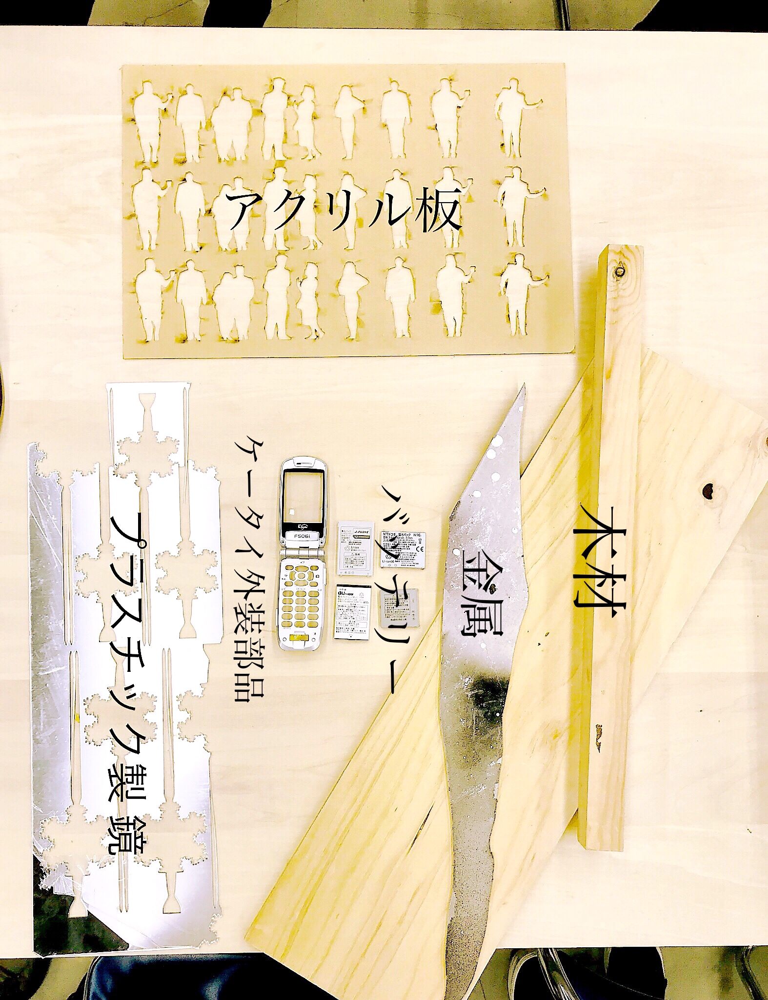
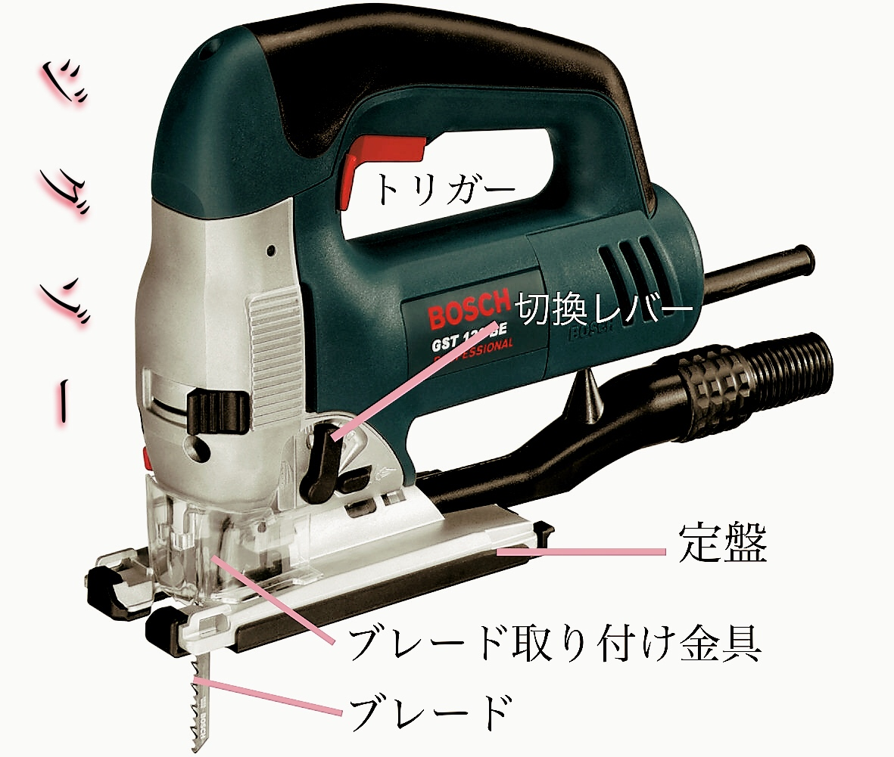

切断ツールも材料も沢山あったので、どのツールで何を切断するのか話し合いながら作業した。
・・・・・・・・・・・・・・・・・・・・・・・・・・・・・・・・・・
切断ツール画像
素材・材料 画像
ツールの詳細画像:セーバーソー

ツールの詳細画像：ジグゾー
・・・・・・・・・・・・・・・・・・・・・・・・・・・・・・・・・・
考察
機械自体は安全を考慮した設計で、作業も広い教室の中で行う事ができたとはいえ、注意を欠いて扱うのは大変危険だ。
これをしっかりと頭で覚えて作業をしたつもりだったが、今回の演習で果たしてどこまで安全な作業を行えていたのだろうか？
記録係として、班の活動を客観的にとらえてみた中で、安全面について気づいたことを書こうと思う。
安全面への注意点は大きく三つある。
・・・・・・・・・・・・・・・・・・・・・・・・・・・・・・・
1.材料の固定
切断道具は切断する際に力がいるのと、慎重に切らなければ身の安全が保てないからなのかしっかり固定をおこなっていたが、危険度が低い切断対象には意識が向かなかった。
（切断道具の刃ばかりに意識を向けてしまう傾向があった。）
もちろん切断作業に置いて第一にそこに注意を向けていなければならないが、切断される材料にもある程度目を配る必要がある。
刃に巻き込まれて勢いよく断片や破片が飛んだりして自分や周囲の人に危険を晒してしまう可能性があるだ。
作業が進んでいくにつれて工具の扱いにも慣れ、材料の固定もしっかりとするようになったが、だからこそもっと意識するべきことだった。
・・・・・・・・・・・・・・・・・・・・・・・・・・・・・・
2.粉塵・屑への対処（目や肺の保護）
これに関しても「１」と重なるところがある。
刃が当たってしまいそうな手・腕などには注意を向けるが、小さな粉塵・屑は軽視しがちだ。
実際、ワークショップも含めた全ての演習の時間で、私たち「切断チーム」は「防塵マスク」・「保護メガネ」をつけなかったし、
レポートには記していたのにも関わらず、他班から注意されるまで気がつけなかった。（なぜか防音対策だけはした）
この事からもわかるように私たちの危険に対する注意力は「刃」全て持っていかれてしまうほど不完全で、矮小なものだと分かった。
・・・・・・・・・・・・・・・・・・・・・・・・・・・・・・
3.安全確認・動作確認
切断作業は他のチームと比べても特に集中力を必要とする作業だ。
初めての経験となればなおさらそうなる。
加えて、「成功させたい！」とか「早くしないと！」などの思いから知らず知らずに焦ってしまうことが素人にはよくある。（←自分のこと）
だがそこにはリスクしかない。
いくらパワーのある機械といえどもムリは禁物で、負荷がかかって壊れてしまう場合もある。
電源の入・切の確認、刃の動作確認、切る位置の確認など。はじめのうちはゆっくりステップを踏んでから作業帆進める必要があるだろう。
・・・・・・・・・・・・・・・・・・・・・・・・・・・・・・
まとめ
撮影した写真は「slack」に共有したり、わかりやすく言葉・文字を付け足すなどの編集もおこなった。
いつどんな写真が役にたつかわからないのでこまめに、いろんな視点・角度から写真をとった。（特に、切断作業中や切断素材の断面の様子など。）
記録写真/一部抜粋

「Fabble/Memo欄」には「Report欄」には書ききれない作業をとおしての感想・考察、切断道具などのリサーチ情報、使用上の注意点などをまとめた。
「セーバーソー・ハンドソーを使った材料（木材、金属）の切断」、「ジグゾーでアルファベットを切断」、「ハサミ・カッターナイフでの切断」、「アクリルの切断」の全４構成で書いた。
その他、「ワークショップの感想」（Memo欄の２）。
・・・・・・・・・・・・・・・・・・・・・・・・・・・・・・・・・・・・・・・・
反省・次回へ向けての意気込み！
加えて、記録に集中してしまって、自分の目で見て手で触って、耳で音を聞いて、、、など。身体で覚えることを忘れてしまっていたようにも思える。
「考察」で書いた「安全面での注意点」でも外から見た意見にすぎない。自分で体験しないと発見できないこともあっただろう。
次回は積極的に道具を触り、「写真や記事に」ではなく、感覚的に、「自分の体」に記録したい！！！
・・・・・・・・・・・・・・・・・・・・・・・・・・・・・・・・・・・・・・・・・・・